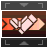
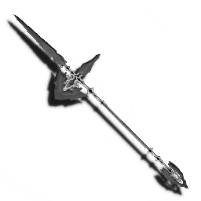

Partisan is a stylish weapon that despite it's great potential, has been tarnished by it's PSO2 reputation. If you're somehow reading this early, keep in mind the text is still placeholder / previous thoughts without rechecking on the current state of things regarding MWs.
A
Partisan is a stylish weapon that despite it's great potential, has been tarnished by it's PSO2 reputation.
A
Cleaving Scythe: yoloThrusting Javelin: yolo
Fatal Tornado: yolo
Triumphant Shift: yolo
 Weapon Action: yolo
Partisan is a stylish weapon that despite it's great potential, has been tarnished by it's PSO2 reputation.
If you are only going to use a Partisan, then you can max out every Partisan + General Hunter skill without any issues with 44 SP.
Partisan Only Skilltree: click here
Draws aggro from enemies in a small radius.
NOT RECOMMENDED
Utterly useless in most scenarios, but we'll focus on the two core usages for War Cry: drawing a boss' aggro, and drawing aggro from a group of enemies.
Temporarily reduces damages taken, prevents knockback and being launched.
RECOMMENDED
An essential skill.
Provides shielding when Hunter Physique ends. Deploys a shield only while a PA is in effect, reduces damage received, and protects you from being knocked back or launched. Being hit a certain number of times while the shield is deployed will cause it to deactivate.
RECOMMENDED
A free post shield.
Reduces the effect duration of Hunter Physique, but also shortens its cooldown time.
PARAMETER
This is a parameter skill: how much SP you use is entirely up to your own playstyle. The addition of "Hunter Physique Extra Shield" does make this a more interesting choice. However, keep in mind that the default 30 seconds active / 180 seconds cooldown is way too long, so I can only really see two scenarios:
Reduces damage taken.
RECOMMENDED
Very straight forward damage reduction passive with no drawbacks. It does have a maximum of 15 SP, which will reduce damage by 25%. However, 1 SP is enough to give you 10% damage reduction from the get go, so regardless of your skill tree, you should invest 1 SP in this skill.
An incapacitating attack will leave you with 1 HP, and a moment of invulnerability when this skill is triggered.
RECOMMENDED
Why would you not?
Guarding with Weapon Action will protect you from attacks from all directions.
RECOMMENDED
Why not?
After using different PAs with the same weapon, your next Normal Attack will change at the fourth step. If the combo has fewer than four steps, it will change at the final step.
RECOMMENDED
Why not?
Pressing the Weapon Action button at just the right time after a Photon Art will unleash a chargeable thrust attack.
RECOMMENDED
See the Weapon Action section.
After activating Hunter Arts Avenger, performing an Assault Charge with the Photon Art will increase its potency.
OK
It's okay, but the problem is that it's very easy to forget it's active, and you're most often that not going to waste the power boost on an uncharged assault charge.
Taking a hit within a set time of using a Photon Art increases that Photon Art's potency.
RECOMMENDED
See the Avenger section.
Recovers PP upon executing Hunter Arts Avenger.
RECOMMENDED
Partisan is a PP hungry weapon, so any extra PP regen is a good thing.
Confers an additional invulnerability period upon a successful Hunter Arts Perfect Parry.
RECOMMENDED
Longer invulnerabilities? Why not?
Allows you to string up to 4 Normal Attacks.
RECOMMENDED
On it's own, it's nothing special: a slow, strong, single hit after the 3-hit basic attack combo. However, it's notable for having iframes for the entirety of the attack, good PP regen on hit, and with Another Arts Skip Attack enabled, any 2 different PAs can instantly lead straight into 4th Attack. Consider this a utility for shielding yourself if you're about to be attacked.
After a successful guard with a Weapon Action, the potency of your next Assault Charge will be increased.
OK
It's a very situational upgrade, because you really shouldn't be fishing for Weapon Action guards in close combat situations: you should be parrying with (ideally perfect) Avengers.
The only area I consistently remember about this skill is against Dark Falz, where you can time a Weapon Action shield in the AOE areas while you're chasing the boss.
Pressing the Weapon Action button at just the right time after performing Sidestep Strike, Sidestep Counter, Assault Charge, or Photon Blast causes you to rapidly close in on an enemy and perform an attack.
RECOMMENDED
Do not sleep on this.
After using the same PA with the same weapon, your next Normal Attack will charge at the third step.
RECOMMENDED
Why not.
Slows fall speed when charging a Photon Art.
RECOMMENDED
More and more enemies require you to be in mid air in some way to reach their weakpoint. Since a majority of the time you're going to be charging your Photon Arts, this will make sure you lose as little height as possible.
Pressing and holding the Weapon Action button will unleash a spear of photons that accumulate damage. The spear will explode after a set time or taking a certain amount of damage.
RECOMMENDED
See the Volkraptor section for more information.
Avenger is the single most important element to Hunter's damage, and is especially important to master with Partisan.
The concept is simple: just as an enemy attack is about to hit you, release a Partisan Photon Art. As in, you let go of the button (there is one exception).
Partisan's Weapon Action is a swiss knife. It can do many things.
A Sub-Class is rather important for your playstyle, as it's non-Main Class Skills can be used alongside the Partisan (generally). It also determines the weapons you can equip and fully use when Multi-Weaponed onto a Partisan. But in general, the Partisan can hold up on it's own.
On a personal note, I find very little use in Multi-Weaponing a melee weapon onto the Partisan: a lot of melee weapons simply flow differently, and you miss out on their Main Class only gimmicks.
I don't really see a point, but there are some things to keep in mind.
Multi-Weapons

 with Sword - The photon blast does more damage, and you get to stay still (but now Partisan Quick Assault can warp you back to the weak point after a Partisan Photon Blast, so it's not as bad anymore...)
with Sword - The photon blast does more damage, and you get to stay still (but now Partisan Quick Assault can warp you back to the weak point after a Partisan Photon Blast, so it's not as bad anymore...)
 with Wired Lances - It's got the Weapon Action, but that's outdated with the addition of Partisan Quick Assault, which not only flows better with Partisan actions, but also has better range, gap closes even if the target is a tad too far, and is just cooler. It's also got close-ranged AOE attacks, but the problem is that so far, there's no real content where you are swarmed from all sides for it to be even worth it over, say... Zonde. Sure, PSE Bursts exists, but it's only helpful if you end up with a good layout where enemies are all grouped up. What happens when you get the bad layouts? You end up with the awful animation locks.
with Wired Lances - It's got the Weapon Action, but that's outdated with the addition of Partisan Quick Assault, which not only flows better with Partisan actions, but also has better range, gap closes even if the target is a tad too far, and is just cooler. It's also got close-ranged AOE attacks, but the problem is that so far, there's no real content where you are swarmed from all sides for it to be even worth it over, say... Zonde. Sure, PSE Bursts exists, but it's only helpful if you end up with a good layout where enemies are all grouped up. What happens when you get the bad layouts? You end up with the awful animation locks.
Ironically, both these weapons lost some utility the minute Partisan Quick Assault got added.
Do not sleep on this.
Multi-Weapons
 with Twin Daggers - A
with Twin Daggers - A
 &Knuckles - A
&Knuckles - A
 with Double Saber - A
with Double Saber - A
lmao
You get some status ailment resists, but compared to other sub-classes, you gain nothing of value. If you really want status ailment resist, you can build it through other methods, such as add-on skills and Addi Ward capsules. And no, you don't have access to Weak Bullet as a Sub-Class.
Multi-Weapons
 with Assault Rifle - A
with Assault Rifle - A
 with Launcher - Truly an awful combination. Why would you ever decide to combo your fast attacks into lag heavy, slow and clunk ranged attacks?
with Launcher - Truly an awful combination. Why would you ever decide to combo your fast attacks into lag heavy, slow and clunk ranged attacks?
lmao
Hmm?
Multi-Weapons
 with Twin Machineguns - A
with Assault Rifle - See Ranger.
with Twin Machineguns - A
with Assault Rifle - See Ranger.
lmao
 Hunter / Force
Hunter / ForceYes please. PP Management.
Multi-Weapons
 with Rod - A
with Rod - A
 with Talis - A
with Talis - A
lmao
Photon Blast battery.
Multi-Weapons
 with Wand - A
with Talis - See Force.
with Wand - A
with Talis - See Force.
lmao
Restasign boost.
Multi-Weapons
 with Katana - Utterly disgusting, trying to infect the glorious supreme Partisan with your feeble weeb stick.
with Katana - Utterly disgusting, trying to infect the glorious supreme Partisan with your feeble weeb stick.
 with Bow - A
with Bow - A
lmao
 Hunter / Bouncer
Hunter / BouncerBreak Break!
Multi-Weapons
 with Soaring Blades - A
with Soaring Blades - A
 with Jet Boots - A
with Jet Boots - A
lmao
Restasign Boosters
Multi-Weapons
 with Harmonizer - A
with Harmonizer - A
lmao
Hunter is a surprisingly not restrictive class when it comes to fully utilizing it's kit, but there are downsides.
Notably, there's a significantly reduced survivability when used as sub-class:
Partisan is a melee weapon, thus, requires Melee Potency augments to make it stronger.
Partisan is a melee weapon, thus, requires Melee Potency augments to make it stronger.
Obsidia Spear - Really nice. There are Add-on skill you can obtain from the class counter that will greatly ease your Partisan play. Add-on skills apply to your entire character regardless of their class, so you'll want to get some addons for every class slot. There are some noteworthy Addons Main Effects and Sub Effects you should definitely work to get at a high level.There are Add-on skill you can obtain from the class counter that will greatly ease your Partisan play. Add-on skills apply to your entire character regardless of their class, so you'll want to get some addons for every class slot. There are some noteworthy Addons Main Effects and Sub Effects you should definitely work to get at a high level.
There are Add-on skill you can obtain from the class counter that will greatly ease your Partisan play. Add-on skills apply to your entire character regardless of their class, so you'll want to get some addons for every class slot. There are some noteworthy Addons Main Effects and Sub Effects you should definitely work to get at a high level.
Natural PP Recovery Up - Try getting a good level on this, because this will sync really nicely with a Bouncer Add-On Skill.
Panic Resistance Up - Nobody likes having their controls reversed. It's still a bit of a niche status ailment, only being notably used by Crocodylis Vera. Minimum 30% resistance at level 1 (50% at level 20), so no real need to get this any higher.
Dash and Glide PP Recover - Absolute MUST HAVE. Basically, any dashing and gliding will trigger your passive PP restoration, but reduced. At level 1, you'll only get 5% of your passive PP restoration. At level 20, you get 100%. The speed of this passive PP restoration is also affected by Passive PP Regen Skills and things like Force's PP Convertion Active Skill. I cannot stress how useful it is for quests like Mining Rigs, where you need to move between rigs/towards enemies/towards towers/chasing Destragas, or just as a general QoL. Get this as high as possible.
Encore Jump - Not a recommendation to upgrade, because it's not very intuitive to run towards your enemy. Besides, as a Partisan main, being too close to a weak point means you're going to NOT hit the weakpoint, so you're always at a distance from the weak point, and therefore, never hugging the enemy. You can hug me though!
- Advisors on Phantasy Star Fleet for advice/information
- Aida Enna, for their Etoile guide, which I based the website off... which is apparently based off airoh.'s layout?
- Arc, for writing a very nice comment about the things one should have in a guide, which helped a lot for laying out this guide!
- Arks Visiphone for icons and data
December 24th, 2022
Partisan guide editing begins...